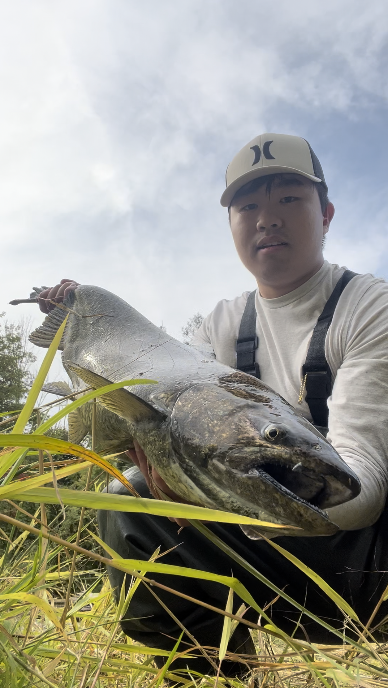

Hi! My name is Timothius Prajogi, I am currently a 3rd year student studying at University of Toronto.
I love spending time outdoors, especially fishing. There's just something about being in nature and casting a line that I find so relaxing. When I am not on the water - I'm also a bit of a problem solver. I enjoy the challenge of using programming and other technology to solve problems that I face. So, whether you're into fishing or tech stuff, let's connect!